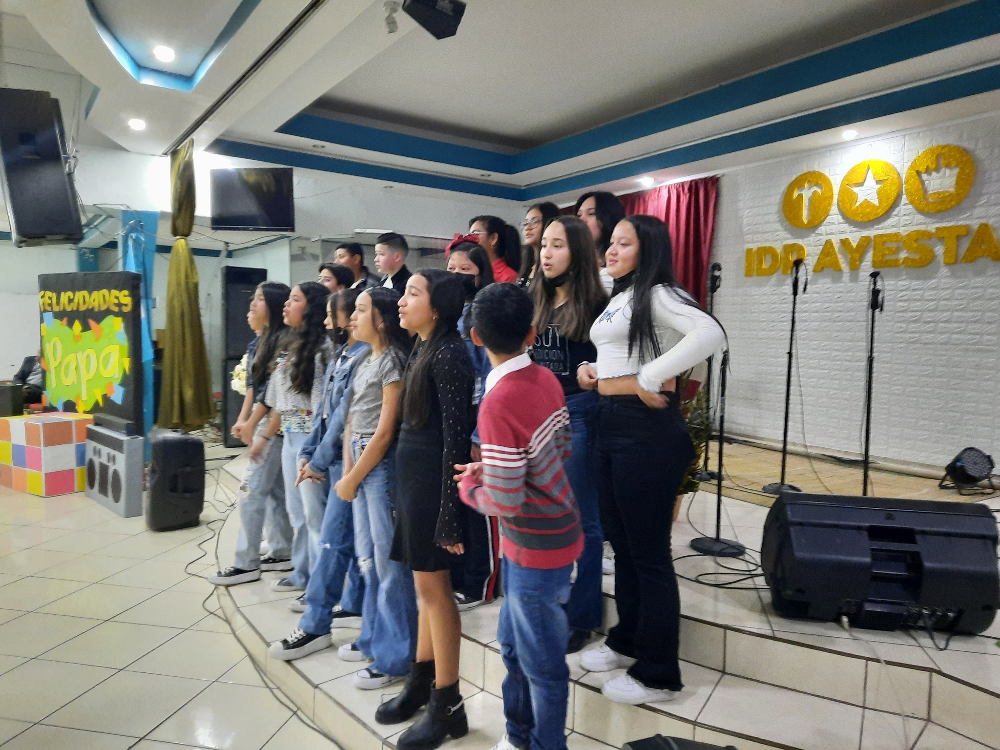

Centro Educativo Shalon Yireh
Ubicación: Ayestas.
Nivel educativo: Pre basica, basica y media.
Matrícula: Aproximadamente 500 estudiantes.
Fundado: año 1991.
Plantel docente: El Centro Educativo Shalon Yireh cuenta con un equipo docente
altamente calificado y comprometido con la educación de los estudiantes.
Currículo: El currículo del Centro Educativo Shalon Yireh está basado en los estándares
nacionales de educación de Honduras. La institución ofrece una formación académica sólida en las áreas de
matemáticas, ciencias, lenguaje y humanidades. Además, la institución promueve el desarrollo de habilidades
socioemocionales y valores morales en los estudiantes.
Actividades extracurriculares: El Centro Educativo Shalon Yireh ofrece una variedad de
actividades extracurriculares que complementan la formación académica de los estudiantes. Las actividades
extracurriculares incluyen:
- Deportes
- Arte
- Musica
- Teatro
- Debates
Precios: Los precios de la matrícula en el Centro Educativo Shalon Yireh son accesibles para la población de la zona. Los precios varían según el nivel educativo.
Historia
El Centro Educativo Shalon Yireh fue fundado en el año 2000 por un grupo de padres de familia y docentes con el objetivo de brindar una educación integral y de calidad a los estudiantes de Juticalpa, Honduras. Los fundadores de la institución buscaban crear una escuela que ofreciera una formación académica sólida, así como también un desarrollo integral de los estudiantes, incluyendo su formación moral y espiritual. En sus inicios, el Centro Educativo Shalon Yireh ofrecía solo educación preescolar y primaria. En el año 2010, la institución abrió sus puertas a la educación secundaria. Actualmente, el Centro Educativo Shalon Yireh cuenta con una matrícula de aproximadamente 500 estudiantes, divididos en dos jornadas: matutina y vespertina. La institución ofrece los niveles de educación preescolar, primaria y secundaria, con un enfoque en la formación académica, moral y espiritual de los estudiantes. El Centro Educativo Shalon Yireh ha tenido un impacto positivo en la comunidad de Juticalpa. La institución ha contribuido a la formación de estudiantes educados, responsables y con valores morales.
Equipo
El equipo del Centro Educativo Shalon Yireh está formado por un grupo de profesionales altamente calificados y
comprometidos con la educación de los estudiantes. El personal docente está conformado por maestros con título
universitario y experiencia en la enseñanza. El personal administrativo está formado por profesionales con
experiencia en gestión educativa.
El equipo del Centro Educativo Shalon Yireh está liderado por la Directora General, la Sra. María José López.
La Sra. López es una educadora con más de 20 años de experiencia en la enseñanza. Está comprometida con la
excelencia académica y el desarrollo integral de los estudiantes.
El equipo del Centro Educativo Shalon Yireh está dividido en las siguientes áreas:
- Área académica: Esta área está a cargo de la planificación y ejecución del currículo escolar. El personal de esta área está conformado por maestros de todas las áreas de estudio.
- Área administrativa: Esta área está a cargo de la gestión de la institución. El personal de esta área está conformado por profesionales en administración, finanzas y recursos humanos.
- Área de apoyo: Esta área está a cargo de brindar apoyo a los estudiantes y a sus familias. El personal de esta área está conformado por psicólogos, trabajadores sociales y orientadores educativos.
- El equipo del Centro Educativo Shalon Yireh trabaja en conjunto para brindar una educación integral y de calidad a los estudiantes. El personal está comprometido con el éxito de los estudiantes y con el desarrollo de la comunidad de Juticalpa.